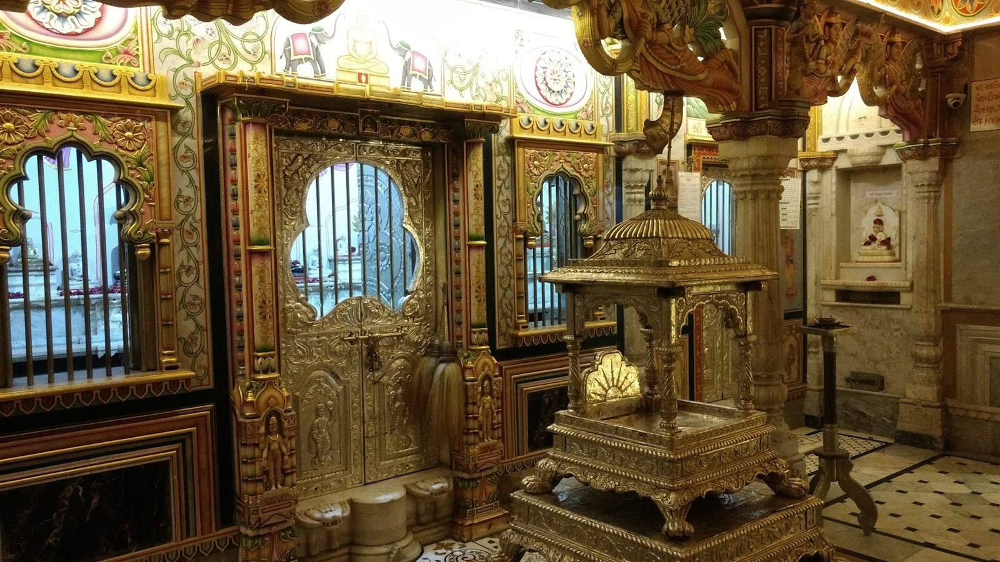
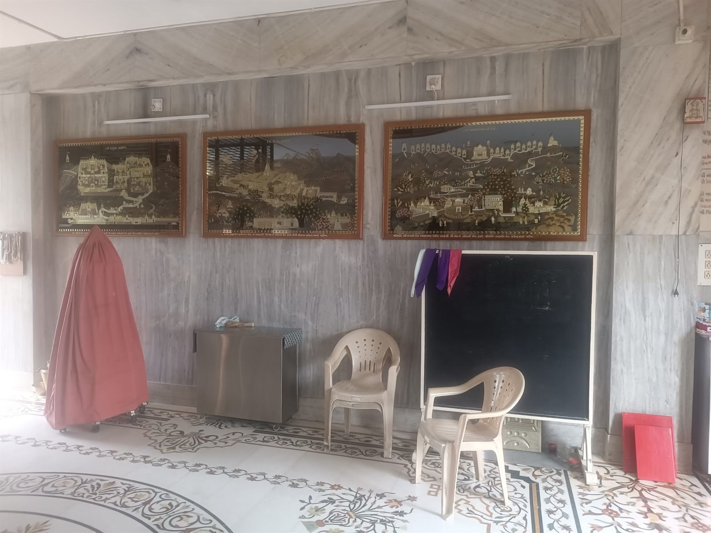
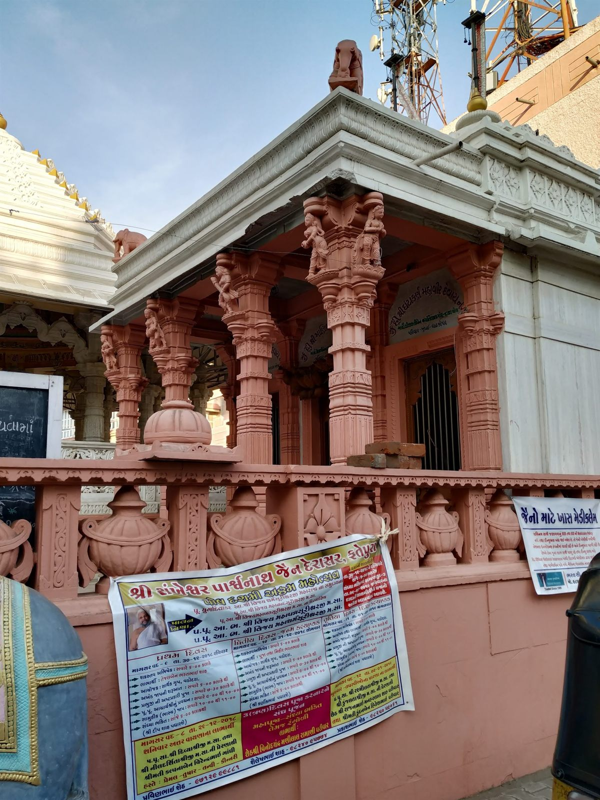

Seva & Daan
Somebody pays for the kesar. Somebody pays for the ghee in the lamps, the flowers on the pedestal, the marble that gets repaired and the prizes at the pathshala. That somebody has always been the Sangh, one family at a time.
Daan is one of the four pillars
In the Jain tradition daan — giving — sits alongside shil, tap and bhav as one of the four ways a householder practises dharma. It is not a transaction and it buys nothing. The point is what leaves the giver, not what arrives.
Of the classical seven fields of giving, three touch a derasar directly: jinbimb and jin-mandir — the idols and the temple itself — and gnan, the support of study. The anukampa and jeev-daya work sits beside them: compassion for those in difficulty, and for every living creature.
What can be offered
Each of these is a real, ordinary need of the derasar. Speak to the Sangh about any of them.
The pathshala
In the marble hall behind the derasar there is a blackboard on a stand. That is the pathshala, and it is where the next generation of this Sangh learns the sutras by heart, the order of the ashtaprakari puja, the stavans — and the reasons behind all of it, rather than by copying whoever is standing in front of them.
What a pathshala needs is unromantic: books, notebooks, a teacher who is paid properly, prizes at the end of term, and something to eat afterwards. It is among the least expensive and most durable seva available at any derasar.


Compassion, organised
The banners tied to the compound railings are not all mahotsav announcements. Some belong to the Jain Anukampa Group, Karelibaug — medical assistance, medicine and treatment help for those who cannot meet the cost, and health camps run out of the Sangh’s premises.
Alongside it runs the jeev-daya work that every Gujarati Jain sangh does almost without discussing it: feed for birds and stray animals, the panjrapole, and help in the dry months when there is nothing for cattle to eat.
If you would like to give to this specifically rather than to the temple fund, say so when you call. Anukampa and jeev-daya funds are kept separate from the temple corpus, as the tradition requires.
Sponsor a puja or offer seva
Fill this in and it opens a pre-written WhatsApp message to the Sangh, which you can read over before sending.
Your message is ready to send in the WhatsApp window. If it did not open, please call 099674 76524.
Contributions are arranged directly with the Sangh’s trustees, to the trust’s own account. This website collects no money and holds no bank details.